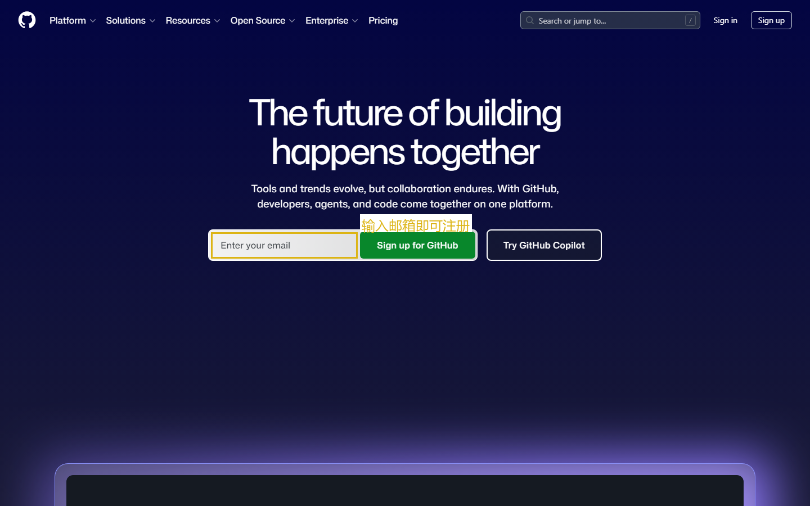
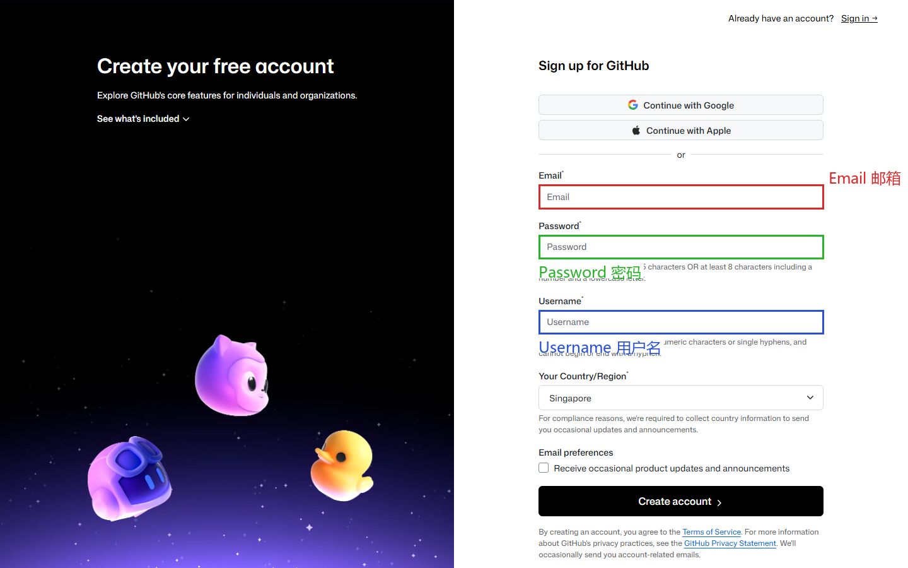

第一课：注册与基础设置
时长：25 分钟 | 前置：无 | P0 词条：19 个 | 覆盖 UI 元素：22 个
学习目标
学完这节课，你能：
- 独立注册 GitHub 账号并完成邮箱验证
- 理解 Dashboard（仪表盘）每个区域的作用
- 完成个人资料设置（头像、Bio、Location）
- 找到并理解 SSH Key 和 Personal Access Token 的作用
- 切换暗色主题
0. 开场（1 min）
画面：课程封面图 + 标题

旁白：
"GitHub 是全球最大的代码托管平台，几乎所有开源项目都在上面。但它的界面全是英文的，这对很多中国工程师来说特别头疼。
这门课不讲 Git 命令，不讲编程，只讲一个事——GitHub 网页上每一个按钮都是干什么的。鼠标指到哪，我讲到哪。
今天第一节课，我们从零开始：注册一个 GitHub 账号，搞清楚每个设置是什么意思。"
1. 首页导读（3 min）
画面：打开 github.com，鼠标依次指向每个元素

1.1 导航栏（顶部黑条）
| 位置 | 英文 | 中文 | 说明 |
|---|---|---|---|
| 左上角 | GitHub logo | — | 点了就回到首页 |
| 搜索框 | Search or jump to... | 搜索或跳转 | 可以搜仓库、搜代码、搜 Issue |
| 导航 | Product / Solutions / Open Source / Enterprise / Pricing | 产品/解决方案/开源/企业版/定价 | 官方介绍页，新手不用管 |
| 右上 | Sign in | 登录 | 已有账号点这里 |
| 右上 | Sign up | 注册 | 没有账号点这里 |
1.2 首页主体
| 区域 | 说明 |
|---|---|
| 大标题 | GitHub 的宣传语，不用看 |
| 输入框 | Email address → 填邮箱直接开始注册 |
| 下方 | 一些 GitHub 的宣传内容，新手不用管 |
2. 注册流程（5 min）
画面：点击 Sign up，进入注册页
2.1 注册表单
| 字段 | 英文 | 含义 | 填写建议 |
|---|---|---|---|
| Enter your email | 输入邮箱 | 用 QQ/163/Gmail 都行，后面要验证 | |
| Password | Create a password | 创建密码 | 至少 8 位，含数字和字母 |
| Username | Enter a username | 用户名 | 全站唯一，建议用拼音或英文名，不然后面不好改 |
| 营销勾选 | Would you like to receive... | 要不要收营销邮件 | 建议取消勾选，不需要 |
2.2 验证你是人类
画面：验证码（Puzzle / CAPTCHA）
旁白：
"这里会出现一个人机验证。按提示做就行，有时候会让你选图片里的'公交车'、'红绿灯'，这个是 GitHub 用来防止机器人批量注册的。"
2.3 邮箱验证
画面：提示 "Verify your email address"
旁白：
"注册完成后，GitHub 会给你邮箱发一封验证邮件，标题通常叫 'Please verify your email address'。
打开邮箱 → 找到这封邮件 → 点里面的蓝色大按钮 'Verify email address'。
验证完会自动跳回 GitHub，你的账号就可以用了。"
3. 首次登录 — Dashboard 讲解（5 min）
画面：登录后的仪表盘
3.1 Dashboard 布局
| 区域 | 英文 | 作用 |
|---|---|---|
| 左侧 | 仓库列表 | 列出你参与/收藏的仓库 |
| 左侧搜索框 | Find a repository... | 搜索你的仓库 |
| 右侧 | Latest changes | 你关注的人/仓库最近干了什么 |
| 右侧 | Explore repositories | 推荐一些你可能感兴趣的仓库 |
| 左下 | 贡献图（绿色格子） | 你这一年的提交频率 |
3.2 右上角菜单（重要！）
逐个点击讲解：
| 图标 | 英文 | 作用 |
|---|---|---|
| 🔔 铃铛 | Notifications | 通知中心，有人 @你、Issue 有新回复都在这里 |
| ➕ 加号 | Create new... | 新建仓库、Import 仓库、新建 Organization 等 |
| 👤 头像 | 个人菜单 | 展开后是最常用的入口 |
3.3 头像菜单详解
点击头像展开下拉菜单：
| 菜单项 | 中文含义 | 点进去干什么 |
|---|---|---|
| Signed in as [username] | 当前登录用户 | 点一下回到 Dashboard |
| Set status | 设置状态 | 像 QQ 状态一样，显示 "忙碌" "休假" |
| Your profile | 你的个人主页 | 别人看到的你的主页 |
| Your repositories | 你的仓库列表 | 你创建和 Fork 的仓库 |
| Your projects | 你的项目看板 | Project 管理 |
| Your stars | 你收藏的仓库 | 点过 Star 的仓库 |
| Your gists | 你的代码片段 | 分享小块代码用的 |
| Settings | 设置 | 个人设置入口 |
| Sign out | 退出登录 | 退出当前账号 |
4. Settings 逐个讲解（8 min）
画面：点击 Settings，左侧导航栏逐个讲解
4.1 Public profile（公开个人资料）
| 字段 | 含义 | 建议 |
|---|---|---|
| Name | 显示名称 | 填中文名或英文名，会显示在个人主页 |
| Public email | 公开邮箱 | 选一个邮箱显示在主页，也可以选"不显示" |
| Bio | 个人简介 | 一句话介绍自己，比如 "Java 后端 / 开源爱好者" |
| URL | 个人网站 | 博客、LinkedIn 等 |
| Company | 公司 | 填了就显示在个人页 |
| Location | 位置 | 比如 "Beijing, China" |
| Update profile 按钮 | 更新资料 | 每次改完必须点这个，否则不会保存 |
4.2 Account（账号设置）
| 设置项 | 含义 |
|---|---|
| Change password | 改密码（需要先输入旧密码） |
| Change username | 改用户名（慎重！改完旧链接全失效） |
| Delete account | 删除账号（不可逆，有确认步骤） |
4.3 Appearance（外观）
| 设置项 | 含义 |
|---|---|
| Theme | 主题：Light（白）/ Dark（黑）/ System（跟随系统） |
| Emoji skin tone | emoji 肤色 |
| Tab size | Tab 缩进宽度 |
4.4 Notifications（通知）
| 设置项 | 含义 |
|---|---|
| Watching | 你 Watch 了仓库的动态通知方式 |
| Email notification | 是否发邮件通知 |
| Subscriptions | 你订阅了哪些 Issue/PR |
4.5 SSH and GPG keys（SSH 密钥）
重点讲，因为命令行用 GitHub 必须配。
| 概念 | 解释 |
|---|---|
| SSH Key | 一种免密码推送代码的方式。在你电脑上生成一对"钥匙"，公钥放到 GitHub，私钥留在电脑。 |
| 怎么生成 | ssh-keygen -t ed25519 -C "你的邮箱" |
| 公钥在哪 | cat ~/.ssh/id_ed25519.pub 然后把输出的内容粘贴到 GitHub |
| New SSH Key 按钮 | 添加公钥 |
4.6 Developer settings（开发者设置）
重点讲 Personal Access Token。
| 概念 | 含义 |
|---|---|
| Personal Access Token (Classic) | 个人访问令牌。2021 年后 GitHub 不能用密码推送代码了，必须用 Token。 |
| Fine-grained token | 新版 Token，可以精确控制权限范围 |
| 生成步骤 | Generate new token → 选权限 → 设置过期时间 → 复制保存（只显示一次！） |
| OAuth Apps | 你用 GitHub 登录 VS Code、Postman 等工具时授权过的应用 |
5. 课后作业（1 min）
- 注册 GitHub 账号并完成邮箱验证
- 上传头像，填写 Bio 和 Location
- 把主题切成 Dark mode
- 找到 SSH and GPG keys 页面（先不配，下节课讲）
- 在 Dashboard 随便点一点，看看每个区域
本课术语速查
{.glossary-table}
| 英文 | 中文 | 出现位置 |
|---|---|---|
| Sign up | 注册 | 首页右上角 |
| Sign in | 登录 | 首页右上角 |
| Username | 用户名 | 注册表单 |
| Verify email | 验证邮箱 | 邮箱验证邮件 |
| Dashboard | 仪表盘/控制台 | 登录后首页 |
| Notifications | 通知 | 右上角铃铛 |
| Repository（Repo） | 仓库 | 存放代码的地方 |
| Star | 收藏/点赞 | 仓库页右上角 |
| Fork | 复刻 | 把别人的仓库复制一份到自己名下 |
| Settings | 设置 | 头像菜单 |
| Profile | 个人资料 | Settings 子页面 |
| SSH Key | SSH 密钥 | 免密推送代码 |
| Personal Access Token | 个人访问令牌 | 替代密码推送代码 |